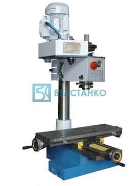
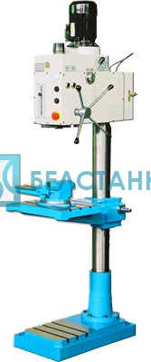
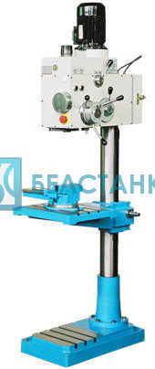

2М112
Станок настольно-сверлильный вертикальный
177 840 ₽Станок настольно-сверлильный вертикальный
177 840 ₽
Станок
2 086 200 ₽
Вертикально-сверлильный станок
520 000 ₽
Вертикально-сверлильный станок
1 128 000 ₽
Настольно-сверлильный станок с автоподачей
239 400 ₽
Станок настольный сверлильно-фрезерный
735 300 ₽
Станок настольно-сверлильный
240 840 ₽
Настольно-сверлильный станок
348 000 ₽
Станок настольный сверлильный
255 360 ₽
Радиально-сверлильный станок
2 195 772 ₽
Радиально-сверлильный станок
5 304 828 ₽
Радиально-сверлильный станок
4 650 000 ₽

Станок вертикально-сверлильный
Цена по запросу
Настольный вертикально-сверлильный станок
Цена по запросу

Станок вертикально-сверлильный
1 050 000 ₽

(2С50/60) Станок вертикально-сверлильный
1 200 000 ₽


Станок вертикально-сверлильный
1 234 236 ₽
Вертикально-сверлильный станок
1 391 328 ₽
Вертикально-сверлильный станок
2 255 940 ₽